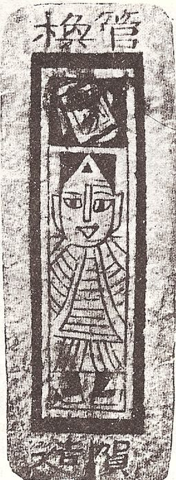

The origins
It is unclear when cards were truly invented as almost all evidence has been lost to time, however, it is
widely accepted that it originated in china in the 9th century using woodblock printing technology. There were
games revolving around drinking alchohol using a sort of
card durign the tang dynasty, these "cards" did not have numbers or suits on them, instead it just had
instructions and forfeits printed onto them

a chinese printed card from around 1400 AD, ming dynasty
Going global
Cards were spread through out the world from the 11th to 14th century, starting in asia ,egypt then europe.
It is speculated that the reason our modern day decks have 52 cards can be traced back to Persia and Arabia,
which had decks consisted of 48 cards, representing numbers and courts grouped into suits much like modern
cards, mamluk cards later increased it to 52 cards. a nearly complete set of mamluk cards were found in 1939
in Istanbul, the deck contained 52 cards however cards that did not match the style of other cards were mixed
in, speculations are that it was to make up for missing cards.
The origins
It is unclear when cards were truly invented as almost all evidence has been lost to time, however, it is
widely accepted that it originated in china in the 9th century using woodblock printing technology. There were
games revolving around drinking alchohol using a sort of
card durign the tang dynasty, these "cards" did not have numbers or suits on them, instead it just had
instructions and forfeits printed onto them
a chinese printed card from around 1400 AD, ming dynasty